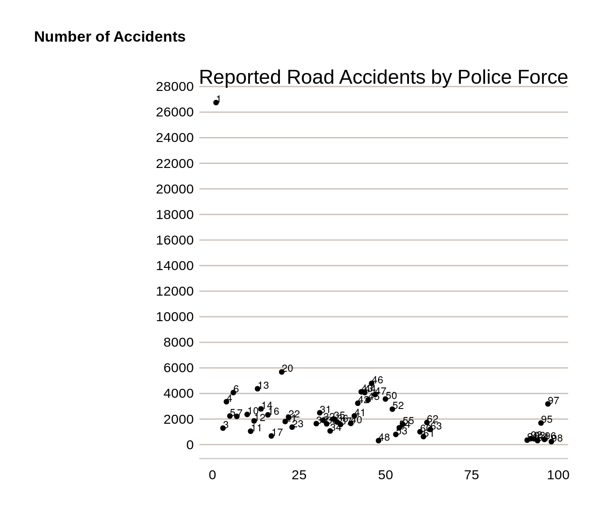

Chapter 8 Plotting and Data Visualisations
This chapter provides some examples of how to visualise data in R, focussing primarily on using {ggplot2} to plot charts. For maps, we’ll look at how to produce static choropleth maps using {ggplot2} and how to produce interactive maps using {leaflet}.
8.1 Plotting in base R
While it is possible to plot charts in base R without using {ggplot2}, this is not recommended. Base R plotting has only limited functionality, and the code looks quite different to the simple syntax of {ggplot2}, so it can make your code hard to write and difficult to read. we’ll look at how to plot simple charts using functions in base R. We’ll use road accident data from 2005 to 2017 to demonstrate how to create line and bar charts.
8.2 Plotting with {ggplot2}
What is {ggplot2}?
The ‘gg’ in {ggplot2} stands for ‘grammar of graphics’. This is a way of thinking about plotting as having grammar elements that can be applied in succession to create a plot. This is the idea that you can build every graph from the same few components: a dataset, geoms (marks representing data points), a co-ordinate system and some other things.
The ggplot() function from the {ggplot2} package is how you create these plots. You build up the graphical elements using the + symbol. Think about it as placing down a canvas and then adding layers on top.
At DfT we advocate using {ggplot2} when plotting charts. There is consistency in the way that {ggplot2} works which makes it easier to get to grips with for beginners. It is also part of the {tidyverse} which we have used earlier on in this cookbook so it shares the underlying design philosophy, grammar, and data structures.
8.2.1 Line charts with {ggplot2}
When plotting with {ggplot2}, we start with the ggplot() function which creates a blank canvas describing the data that we’re going to use and how that relates to different aspects of charts (x axis, y axis, colour, size, etc). The next layer we add is the plot type using a geom function. This specifies what type of chart we’d like to create; a line chart, bar chart, etc. If we were create a simple line chart for total accidents against year, the code would read as follows:
# read in road accident data
road_acc <- readr::read_csv(
file = "data/road_accidents_by_year_and_severity.csv")
#> Rows: 39 Columns: 4
#> ── Column specification ────────────────────────────────────────────────────────
#> Delimiter: ","
#> chr (1): name
#> dbl (3): accident_year, accident_severity_id, total
#>
#> ℹ Use `spec()` to retrieve the full column specification for this data.
#> ℹ Specify the column types or set `show_col_types = FALSE` to quiet this message.
head(road_acc)| accident_year | accident_severity_id | name | total |
|---|---|---|---|
| 2005 | 1 | Fatal | 2913 |
| 2005 | 2 | Serious | 25029 |
| 2005 | 3 | Slight | 170793 |
| 2006 | 1 | Fatal | 2926 |
| 2006 | 2 | Serious | 24946 |
| 2006 | 3 | Slight | 161289 |
road_total <- road_acc %>%
dplyr::group_by(accident_year) %>%
dplyr::summarise(total = sum(total))
ggplot(data = road_total, mapping = aes(x = accident_year, y = total)) +
geom_line()So a reusable template for making graphs would be as below, with the relevant sections in the code replaced with a dataset, a geom function and a collection of mappings:
ggplot(data = , mapping = aes(
A ggplot object must contain
the data to be plotted as the first argument
how that data should be mapped to the different aspects of the plot, defined using
aes()(short for aesthetics).a geometric to draw the aesthetics with
ggplot works with layers, each added with the
+operator.Mappings are always added using the
aes()command, which can be inside theggplot()orgeom.
You can find a range of different plot types available in {ggplot2}, as well as tips on how to use them in the {ggplot2} cheatsheet (https://raw.githubusercontent.com/rstudio/cheatsheets/main/data-visualization.pdf).
Let’s create a line chart showing total road accidents against year:
road_total <- road_acc %>%
dplyr::group_by(accident_year) %>%
dplyr::summarise(total = sum(total))
ggplot(data = road_total, aes(x = accident_year, y = total)) +
geom_line() 
8.2.2 Aesthetic mappings
It’s normal that you will want to explore more than two variables within your datasets. You can do this by mapping those variables to different aspects of the chart in ggplot; things like colour, point shape, or line type. This is done by mapping a column to an aesthetic. For example, if we want to see the total number of road accidents by severity type against year, we can map the ‘name’ variable to the colour aesthetic:
ggplot(data = road_acc, mapping = aes(x = accident_year, y = total, colour = name)) +
geom_line() +
scale_x_continuous(breaks = seq(2000, 2017, 2))You also don’t have to map aesthetics onto variables; you can specify them manually if you don’t want them to be related to a variable. To do this, you need to specify the colour, shape, linetype, etc outside of the aesthetic call. Here we have specified the colour of the line (notice this is outside of the aes() function) as red. We have also labelled the x and y axes and given the plot a title.
ggplot(data = road_total, aes(x = accident_year, y = total)) +
geom_line( colour = "red") +
xlab("Year") +
ylab("Total") +
ggtitle("Total road accidents per year, 2005 - 2017") 8.2.3 Bar charts with {ggplot2}
When creating bar charts with {ggplot2}, we can use geom_bar() or geom_col(). geom_bar() makes the height of the bar proportional to the number of cases in each group while geom_col() enables the heights of the bars to represent values in the data. So if your data is not already grouped you can use geom_bar() like so:
messy_pokemon <- readr::read_csv(
file = "data/messy_pokemon_data.csv")
head(messy_pokemon)| species | combat_power | hit_points | weight_kg | weight_bin | height_m | height_bin | fast_attack | charge_attack | date_first_capture | time_first_capture |
|---|---|---|---|---|---|---|---|---|---|---|
| abra | 101 | 20 | 17.18 | normal | 0.85 | normal | zen_headbutt | shadow_ball | 31 May 1977 | 20:59:33 |
| abra | 81 | 16 | 25.94 | extra_large | 1.00 | normal | zen_headbutt | shadow_ball | 24 February 1973 | 10:18:40 |
| bellsprout | 156 | 32 | 5.85 | extra_large | 0.80 | normal | acid | sludge_bomb | 21 June 1924 | 08:06:55 |
| bellsprout | 262 | 44 | 5.42 | extra_large | 0.82 | normal | acid | sludge_bomb | 01 August 1925 | 11:18:28 |
| bellsprout | 389 | 50 | 3.40 | normal | 0.66 | normal | vine_whip | wrap | 06 August 1952 | 21:11:42 |
| bellsprout | 433 | 59 | 6.67 | extra_large | 0.84 | normal | acid | power_whip | 17 January 1915 | 13:30:41 |
ggplot(data = messy_pokemon, mapping = aes(x = weight_bin)) +
geom_bar()This has grouped our data by weight_bin with the height of the bars representing the number of pokemon in each weight bin.
You can also use geom_bar() to create a similar type of chart using the road accident data. Note that by default geom_bar() doesn’t take a y variable, so in this situation you would need to add an extra argument into the geom_bar call: stat = “identity”.
road_acc_2017 <- road_acc %>%
dplyr::filter(accident_year == 2017)
ggplot(data = road_acc_2017, mapping = aes(x = name, y = total), fill = "lightblue", col = "black", stat = "identity") +
geom_bar(stat = "identity")+
xlab("Severity") +
ylab("Total accidents") +
ggtitle("Total accidents by severity, 2017") 8.3 DfT colours and themes: the dftplotr package
So far we’ve used colours built into R and referred to them by name e.g. red, lightblue etc. In order to make charts using DfT colours, we can make use of the dftplotr package. This is a Github package with pre-loaded colour palettes and theming to produce publication-quality charts.
Installation of the {dftplotr} package is via the {remotes} package:
install.packages("remotes")
remotes::install_github("department-for-transport/dftplotr")For example, for the previous bar chart we can set the levels of severity to different DfT colours easily using the scale_fill_dft() function
ggplot(data = road_acc_2017, mapping = aes(x = name, y = total, fill = name)) +
geom_bar(stat = "identity")+
xlab("Severity") +
ylab("Total accidents") +
ggtitle("Total accidents by severity, 2017") +
theme_classic() +
dftplotr::scale_fill_dft()
#> This palette meets WCAG 2.0 AAA accessibility guidelines. This is the highest standard of accessibility.Here we map the name variable to the fill argument within the aesthetic.
Similarly, you can use the present DfT themes in the package to set the appearance of your plots. Themes are used to set the style of your plot and can give your plots a consistent customized look, setting the appearance of features such as titles, labels, fonts, background, gridlines, and legends.
8.3.1 Custom DfT Theme
The dftplotr package comes with several inbuilt themes for both line and bar charts, that are easy to apply:
# use the DfT colours and the DfT theme for the accidents by severity line chart
ggplot(data = road_acc, mapping = aes(x = accident_year, y = total, colour = name, label = name), size = 1.5) +
geom_line() +
labs(title = "Accidents by severity, 2005 to 2017",
x = "Accident Year",
y = "")+
scale_x_continuous(breaks = seq(2005, 2017, 2))+
dftplotr::theme_line_dft() #here we specify our custom theme
#> This palette meets WCAG 2.0 AAA accessibility guidelines. This is the highest standard of accessibility.
#> Warning in directlabels::geom_dl(aes(label_nudge = label_nudge), method =
#> list("last.qp", : Ignoring unknown aesthetics: label_nudge
You can also modify aspects of a theme using the theme() function. For example, for our previous accidents plot, we can remove the legend title and move the position of the plot title.
# use the DfT colours and the DfT theme for the accidents by severity line chart
ggplot(data = road_acc, mapping = aes(x = accident_year, y = total, colour = name, label = name), size = 1.5) +
geom_line() +
labs(title = "Accidents by severity, 2005 to 2017",
x = "Accident Year",
y = "")+
scale_x_continuous(breaks = seq(2005, 2017, 2))+
dftplotr::theme_line_dft()+ #here we specify our custom theme
theme(legend.title = element_blank(),
plot.title = element_text(hjust = 0.5))
#> This palette meets WCAG 2.0 AAA accessibility guidelines. This is the highest standard of accessibility.
#> Warning in directlabels::geom_dl(aes(label_nudge = label_nudge), method =
#> list("last.qp", : Ignoring unknown aesthetics: label_nudge8.4 More {ggplot2} charts
This section provides more code examples for creating {ggplot2} themes, including the DfT theme code.
First, some more record-level road accident data is read in which can be used with the charts:
# read in road accident data
road_acc_data <- readr::read_rds("data/road_accidents_2017.RDS")
head(road_acc_data)| acc_index | Location_Easting_OSGR | Location_Northing_OSGR | Longitude | Latitude | Police_Force | Accident_Severity | Number_of_Vehicles | Number_of_Casualties | Date | Day_of_Week | Time | Local_Authority_(District) | Local_Authority_(Highway) | 1st_Road_Class | 1st_Road_Number | Road_Type | Speed_limit | Junction_Detail | Junction_Control | 2nd_Road_Class | 2nd_Road_Number | Pedestrian_Crossing-Human_Control | Pedestrian_Crossing-Physical_Facilities | Light_Conditions | Weather_Conditions | Road_Surface_Conditions | Special_Conditions_at_Site | Carriageway_Hazards | Urban_or_Rural_Area | Did_Police_Officer_Attend_Scene_of_Accident | LSOA_of_Accident_Location |
|---|---|---|---|---|---|---|---|---|---|---|---|---|---|---|---|---|---|---|---|---|---|---|---|---|---|---|---|---|---|---|---|
| 2017010001708 | 532920 | 196330 | -0.080107 | 51.65006 | 1 | 1 | 2 | 3 | 2017-08-05 | 7 | 1899-12-31 03:12:00 | 32 | E09000010 | 3 | 105 | 6 | 30 | 0 | -1 | -1 | 0 | 0 | 0 | 4 | 1 | 1 | 0 | 0 | 1 | 1 | E01001450 |
| 2017010009342 | 526790 | 181970 | -0.173845 | 51.52242 | 1 | 3 | 2 | 1 | 2017-01-01 | 1 | 1899-12-31 01:30:00 | 1 | E09000033 | 3 | 5 | 6 | 30 | 3 | 4 | 6 | 0 | 0 | 0 | 4 | 1 | 2 | 0 | 0 | 1 | 1 | E01004702 |
| 2017010009344 | 535200 | 181260 | -0.052969 | 51.51410 | 1 | 3 | 3 | 1 | 2017-01-01 | 1 | 1899-12-31 00:30:00 | 5 | E09000030 | 3 | 13 | 6 | 30 | 3 | 4 | 5 | 0 | 0 | 0 | 4 | 1 | 1 | 0 | 0 | 1 | 1 | E01004298 |
| 2017010009348 | 534340 | 193560 | -0.060658 | 51.62483 | 1 | 3 | 2 | 1 | 2017-01-01 | 1 | 1899-12-31 01:11:00 | 32 | E09000010 | 3 | 1010 | 1 | 30 | 1 | 4 | 4 | 154 | 0 | 4 | 4 | 2 | 2 | 0 | 0 | 1 | 1 | E01001429 |
| 2017010009350 | 533680 | 187820 | -0.072372 | 51.57341 | 1 | 2 | 1 | 1 | 2017-01-01 | 1 | 1899-12-31 01:42:00 | 4 | E09000012 | 3 | 107 | 3 | 20 | 6 | 2 | 3 | 10 | 0 | 5 | 4 | 1 | 2 | 0 | 0 | 1 | 1 | E01001808 |
| 2017010009351 | 514510 | 172370 | -0.353876 | 51.43876 | 1 | 3 | 2 | 1 | 2017-01-01 | 1 | 1899-12-31 03:31:00 | 24 | E09000027 | 6 | 0 | 6 | 30 | 0 | -1 | -1 | 0 | 0 | 0 | 4 | 1 | 2 | 0 | 0 | 1 | 1 | E01003900 |
8.4.1 Scatter plots
The scatter plot example will plot the number of accidents in 2017 for each police force.
To create a scatter plot use geom_point in the ggplot2 code.
Note that to draw out a colour for the points, the code specifies which colour in the list of DfT colours (see DfT colours sub-chapter 7.4) the points will be. In this case, the third colour in the list will be the colour of the points.
Labels are added to the scatter plot using geom_text.
# First get total number of accidents for each police force
accident_pf <- road_acc_data %>%
dplyr::group_by(Police_Force) %>%
dplyr::tally()
# use the DfT colours and the DfT theme for the accidents by police force scatter chart
ggplot(data = accident_pf, aes(x = Police_Force, y = n)) +
geom_point() +
labs(title = "Reported Road Accidents by Police Force",
x = "Police Force",
y = "Number of Accidents")+
scale_y_continuous(breaks = seq(0, 30000, 2000)) + # set y axis to go from 0 to 30,000
geom_text(aes(label=Police_Force), size=3, hjust = 0, vjust = 0) + # amend hjust and vjust to change position
dftplotr::theme_general_dft() #here we specify our custom theme
The police forces are labelled with numbers, but the chart shows that police force 1 (Metropolitan Police) has the highest number of road accidents in 2017.
8.4.2 Horizontal bar chart
The scatter plot showing the number of accidents by police force could also be shown in a horizontal bar chart.
Use geom_col plus coord_flip to create a horizontal bar chart.
For the horizontal bar chart, bars will be shown in descending order, with the police force with the largest value at the top of the chart. This is done by ensuring the data is arranged by the number of accidents (“n”).
As this is categorical data, police force is made a factor, with each police force made a separate level.
# Arrange police force data by size
accident_pf <- arrange(accident_pf, n)
# take a subset for charting purposes
accident_pf_small <- dplyr::filter(accident_pf, n < 600)
# Make police force a factor
accident_pf_small$Police_Force <-
factor(accident_pf_small$Police_Force, levels = accident_pf_small$Police_Force)
# use the DfT colours and the DfT theme for the accidents by police force scatter chart
ggplot(data = accident_pf_small, mapping = aes(x = Police_Force, y = n, fill = Police_Force)) +
geom_col() +
coord_flip() + # make bar chart horizontal
labs(title = "Reported Road Accidents by Police Force, 2017",
x = "Police Force",
y = "Number of Accidents")+
scale_y_continuous(breaks = seq(0, 500, 50)) + # set y axis running from 0 to 500
dftplotr::scale_fill_dft(gradient = TRUE, n = 7) +
theme_minimal() + #here we specify our custom theme
theme(legend.position = "none") # command to remove legends
#> Returning a gradient with 7 shades. To change the number of shades returned, use the n parameter
#> Warning in extract_gradient(palette = palette, ...): Gradient palettes do not
#> meet accessibility requirements for publishingThe chart shows that police force 98 (Dumfries and Galloway) recorded the lowest number of accidents in 2017.
8.4.3 Stacked bar chart
This example will create a stacked bar chart showing the percentage of road accidents in each accident severity category, for each year.
Creating a percentage stacked bar requires using the geom_bar command in ggplot2 and setting the position to fill.
# use the DfT colours and the DfT theme for the accidents by police force scatter chart
ggplot(data = road_acc, aes(fill = name, y=total, x= accident_year)) +
geom_bar(position="fill", stat="identity") + # geom bar with position fill makes stacked bar
labs(title = "Percentage Accident Severity, by Year",
x = "Accident Year",
y = "% Accident Severity")+
dftplotr::theme_bar_dft()+
scale_y_continuous(labels = scales::percent)
#> This palette meets WCAG 2.0 AAA accessibility guidelines. This is the highest standard of accessibility.
#> Scale for y is already present.
#> Adding another scale for y, which will replace the existing scale.If you want the stacked bar chart to show numbers instead of percentages use position = “stack” instead.
# use the DfT colours and the DfT theme for the accidents by police force scatter chart
ggplot(data = road_acc, aes(fill = name, y=total, x= accident_year)) +
geom_bar(position="stack", stat="identity") +
labs(title = "Number of accidents by severity, by Year",
x = "Accident Year",
y = "% Accident Severity")+
dftplotr::theme_bar_dft()
#> This palette meets WCAG 2.0 AAA accessibility guidelines. This is the highest standard of accessibility.8.5 Interactive charts with {plotly}
{plotly} is a graphing library which makes interactive html graphs. It uses the open source JavaScript graphing library plotly.js. It is great for building dashboards or allowing the user to interact with the data themselves. Plotly charts have a high level of interactivity out of the box, and allow you to zoom in, select different series of interest, and export .png images of the customised charts.
{plotly} is not useful for official stats publications as they cannot be uploaded to the gov.uk platform. They are however really useful for other applications; they can be easily built into HTML outputs from Rmarkdown, including reports, slidepacks and static web pages. They can also be used for exploratory analysis and QA notes.
It can be used in two ways - either creating charts directly in plotly (which is difficult as the syntax is very different to ggplot2), or by using the ggplotly() wrapper in combination with {ggplot2}.
8.5.1 {plotly} with {ggplot2}
Taking our previous accidents by severity plot, we can simply assign this to an object and use the ggplotly() function to make it interactive.
library(plotly)
road_acc_chart <- ggplot(data = road_acc, mapping = aes(x = accident_year, y = total, colour = name)) +
geom_line() +
labs(title = "Accidents by severity, 2005 to 2017",
x = "Accident Year",
y = "")+
scale_x_continuous(breaks = seq(2005, 2017, 2))+
theme_minimal()
plotly::ggplotly(road_acc_chart)You can find more information about using {plotly} in R from the following websites:
Graphing library with example code: https://plot.ly/r/
Cheat sheet: https://images.plot.ly/plotly-documentation/images/r_cheat_sheet.pdf
E-book: https://plotly-r.com/index.html